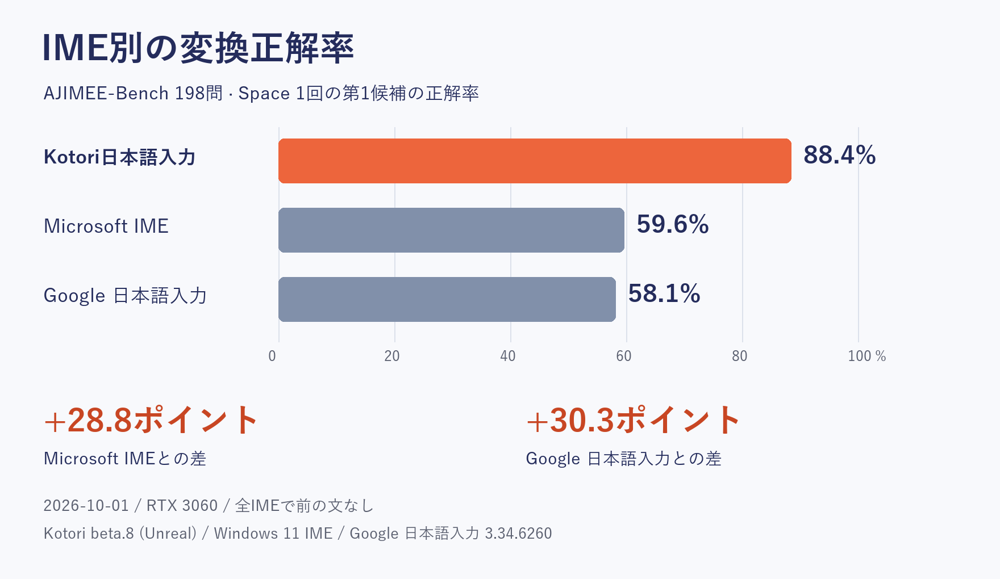

文脈に合う変換
AIが文全体と前の文を読み、同音異義語や言い回しに合う候補を選び直します。ユーザー辞書の登録語は保護します。
LOCAL AI · WINDOWS 日本語入力
Kotoriは、Windowsで使えるオープンソースの日本語入力ソフトです。Mozcをもとに、PC内で動くAIによる変換と予測を追加しています。無料で使えます。使い方や気づいたことを共有しながら、少しずつ改善しています。
公開版 v1.0.0 公開中 · Windows 10 / 11 x64 · GPUなしでも利用可能
MICROSOFT IME / GOOGLE 日本語入力との比較
AJIMEE-Benchの198問を実際にキー入力して比較した結果です。Kotoriの正解率は88.4%、Microsoft IMEは59.6%、Google日本語入力は58.1%でした。

この版・環境・評価セットでの比較。前の文ありの91.5%とは別の評価です。
AIが文全体と前の文を読み、同音異義語や言い回しに合う候補を選び直します。ユーザー辞書の登録語は保護します。
AIが文の続きを裏で考え、候補に「AI」と付けて表示します。Tabで予測へ移って選べます。
専用GPUを自動で見つけて利用します。GPUがないPCはCPU向け設定へ切り替え、時間内に終わらないときはMozcの結果を表示します。
| 読み・前の文 | Mozc単体 | Kotori日本語入力 |
|---|---|---|
| かれはこうえんでこうえんをした | 彼は公園で公園をした | 彼は公園で公演をした |
| おんせいにんしきのせいどがあがった | 音声認識の制度が上がった | 音声認識の精度が上がった |
| このやくはむずかしい 前の文: 英語の文を日本語にしています。 | この薬は難しい | この訳は難しい |
Standard・2026年10月1日の公開例。「前の文」は直前に確定した文として渡したものです。READMEの例と条件
AJIMEE-Bench 200問で、最初の候補が正解と一致した割合。Standard・前の文あり。Mozc単体は51.0%。
調整に使わない最終評価用300問での一致率。Standard・前の文あり。Mozc単体は82.3%。
ニュース、仕事、日常、固有名詞、数字などを評価。実際の文章では誤変換も起こるため、評価条件と失敗例も確認できます。
プロジェクトが公開した測定値（2026年10月1日、RTX 3060）。すべてのPCや文章で同じ結果になるとは限りません。測定方法・記録 · 版ごとの状態
AI変換・予測・設定画面を備えたWindows版。通常の導入はこちらから。
手を止めると、Spaceを押す前にAIの変換と文の続きが候補に並ぶ機能を追加。先行機能を試す方へ。
両版とも未署名です。Windowsの警告が表示される場合があります。対応環境と導入方法を確認できます。